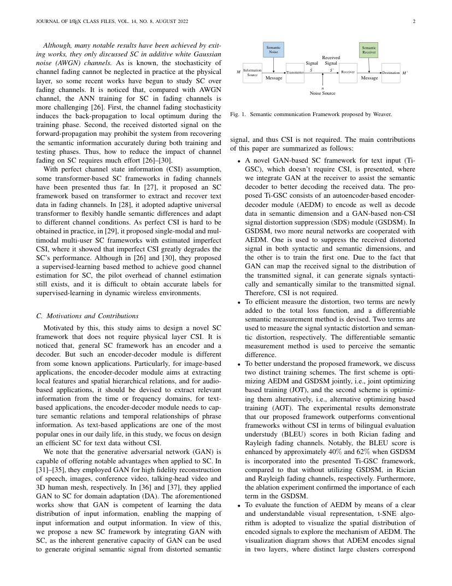
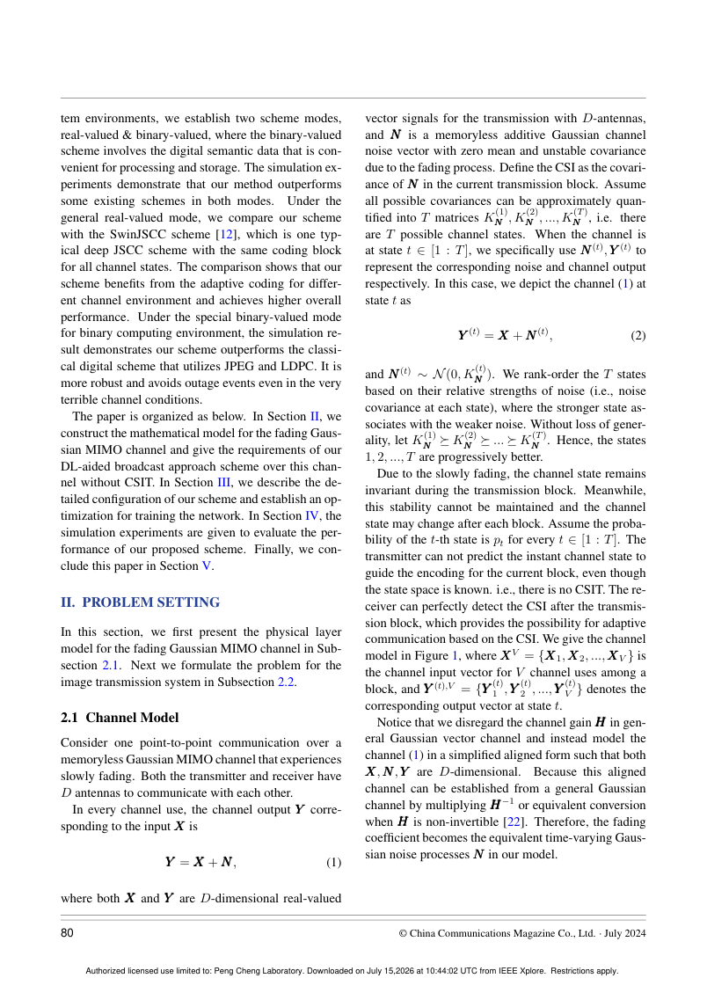
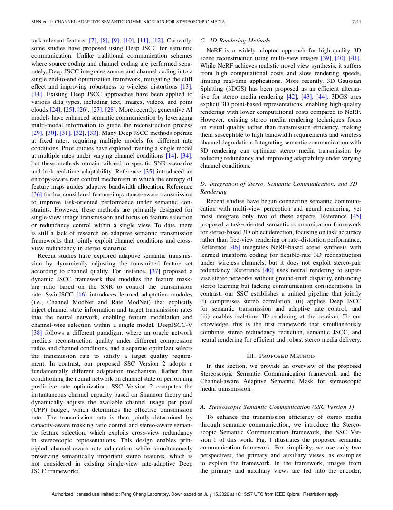
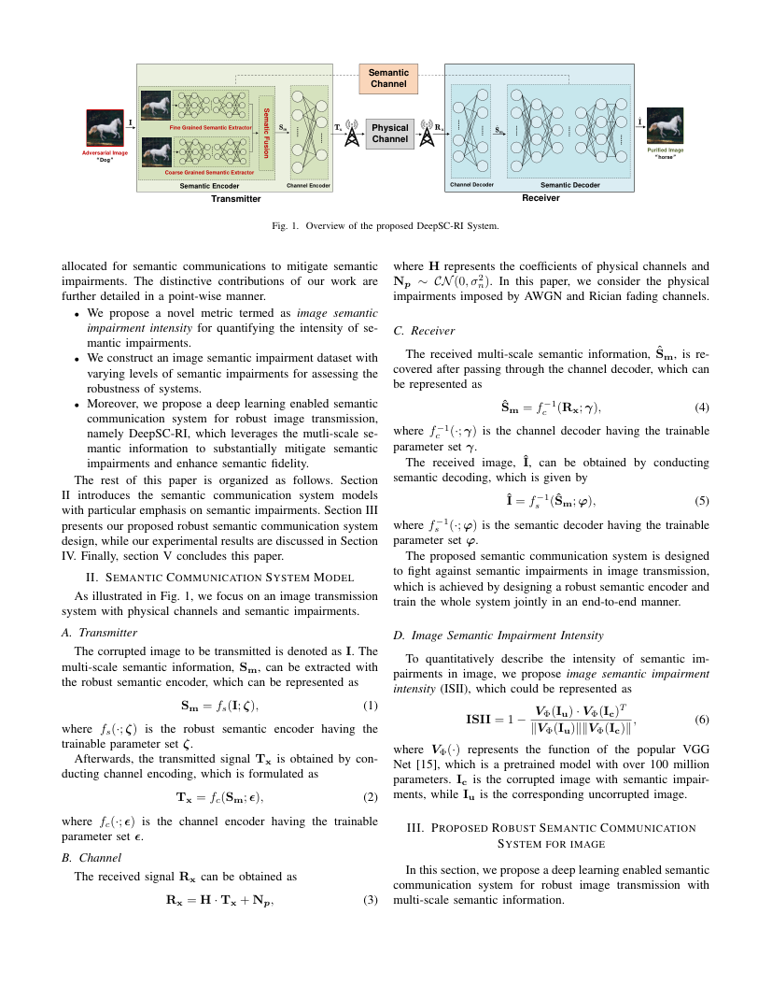

2021-01-01—2026-07-15
六支语义通信团队系统调研
这不是摘要列表。每篇核心论文都从本地全文提取 Motivation 因果链、方法与中间表示、数字化/量化接口、信道作用点、传输开销、实验条件、通信系统定位和审稿价值，并保留 PDF 页码证据。公开页链接 DOI/出版社；本地页链接下载好的 PDF。
261 篇正式技术论文260/261 有效本地全文520 张方法/结果页图1 篇 ACM 合法访问阻塞排除 MDPI、预印本、综述愿景会议版有期刊扩展时仅留期刊版
六支团队入口
卡片数字是重新按本次正式技术论文口径全文筛选后的结果，不沿用旧页面数量。

北京邮电大学牛凯—张平团队
从 NTSCC、语义基、同义映射到数字 VQ、OFDM、多用户接入、生成式与音视频系统，路线覆盖最广。
进入完整报告 →
清华大学秦志金团队
DeepSC 主线从文本、语音和 VQA 扩展到多模态、codebook、token 调制、资源分配、安全与大模型生成。
进入完整报告 →
上海交通大学陶梅霞团队
重点解决数字 coding-modulation、共享码本、广播/多用户、扩散信道去噪、bit-level 映射与 MIMO。
进入完整报告 →
Imperial College London Deniz Gündüz 团队
以 DeepJSCC 为根，研究带宽/星座/MIMO/中继适应、任务推理、语义理论、生成模型、隐私和标准兼容。
进入完整报告 →
Surrey Yi Ma—Mahdi Boloursaz Mashhadi 团队
用 foundation/diffusion models 研究“少传、其余生成”的时延—感知权衡，并延伸到 token 与立体媒体原型。
进入完整报告 →
QMUL Arumugam Nallanathan 与 DeepSC 团队
与秦志金团队存在交叉作者，聚焦 DeepSC、多用户 VQA、鲁棒文本/图像、多任务、多模态与轻量数字接收机。
进入完整报告 →跨团队路线：审稿人在看哪个通信环节
语义/信源编码
量化与码本
信道编码
调制/MIMO/OFDM
无线资源与多用户
任务/生成输出
| 团队 | 最强主线 | 更接近通信系统的环节 | 适合回答的问题 | 读者要警惕 |
|---|---|---|---|---|
| 牛凯—张平 | 语义表示理论 + 全栈系统 | JSCC、数字码本、OFDM、多址、HARQ、知识库 | 语义变量怎样进入复杂无线链路？ | 同一团队也有纯传统 JSCC，已移入背景清单。 |
| 秦志金 | DeepSC 任务与模态扩展 | 语义编码、MIMO、资源分配、token 调制 | 不同任务/模态怎样定义“传对了”？ | 任务指标提高不自动等于 bit 开销公平。 |
| 陶梅霞 | 数字 coding-modulation 与多用户 | 码本、有限星座、广播、MIMO、bit-level mapping | 离散表示怎样直接面对物理信道？ | 要区分 soft symbol 去噪和真实 bit/index error。 |
| Deniz Gündüz | DeepJSCC 原理与网络扩展 | 功率约束信道符号、MIMO、中继、隐私、控制 | 为何 JSCC 在有限带宽和失配下有优势？ | 很多系统是连续 analog-like latent，并非数字语义通信。 |
| Surrey | 生成式/基础模型通信 | prompt/token、功率和时延、立体媒体原型 | 何时可以少传而让接收端生成？ | 感知上“像”不等于事实语义正确。 |
| QMUL / DeepSC | 鲁棒多任务 DeepSC | 多用户、资源分配、数字接收、个性化 | DeepSC 如何从单任务走向真实共享网络？ | 与秦志金页面的交叉论文按 DOI 显式关联。 |
通信零基础的推荐阅读顺序
先看 DeepSC 基线
秦志金/QMUL 的 2021 文本与语音论文，理解“语义 loss + 信道层”的最小系统。
秦志金/QMUL 的 2021 文本与语音论文，理解“语义 loss + 信道层”的最小系统。
补 JSCC 与信道直觉
读 Gündüz 的 DeepJSCC、星座约束、MIMO 和中继工作，建立 SNR、CBR、功率约束与 cliff effect 概念。
读 Gündüz 的 DeepJSCC、星座约束、MIMO 和中继工作，建立 SNR、CBR、功率约束与 cliff effect 概念。
进入数字接口
读陶梅霞的 VAE coding-modulation、共享码本、BitSemCom，再看牛凯的 MOC-RVQ、DGSemCom、VQ-DSC-R。
读陶梅霞的 VAE coding-modulation、共享码本、BitSemCom，再看牛凯的 MOC-RVQ、DGSemCom、VQ-DSC-R。
比较多用户与资源
对照秦志金的 QoE/资源分配、陶梅霞的 broadcast、牛凯的 NOMA/MDMA。
对照秦志金的 QoE/资源分配、陶梅霞的 broadcast、牛凯的 NOMA/MDMA。
再看生成式路线
Surrey 与各团队生成式论文，重点问：传了多少？生成错误怎样定义？时延是否计入推理？
Surrey 与各团队生成式论文，重点问：传了多少？生成错误怎样定义？时延是否计入推理？
最后做研究选题
横向筛出真正显式处理 bit/index error、标准调制、原型和跨域失配的论文，空白通常就在这些接口处。
横向筛出真正显式处理 bit/index error、标准调制、原型和跨域失配的论文，空白通常就在这些接口处。
最常见误解：把任何 neural latent 都叫“数字语义”。严格数字化至少应说明量化/码本/bitstream/有限星座中的一个，并报告实际传输单位和信道出错后的接收形式。
已有专题工具箱
六团队页面回答“谁在做什么”；下面的专题页用于按技术问题重新组织论文。